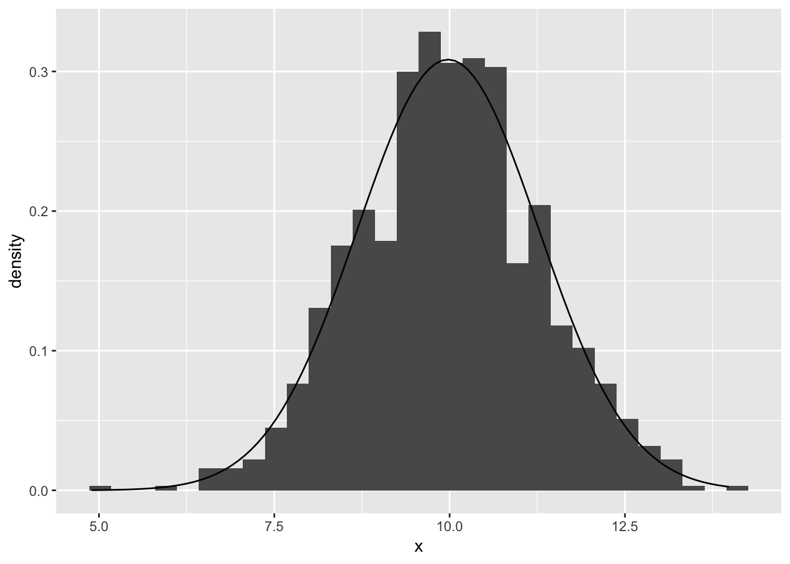

1.A test is graded from 0 to 50, with an average score of 35 and a std. deviation of 10. For comparison of tests, it would be convenient to rescale to a mean of 100 and standard deviation of 15.
How can the scores be linearly transformed to have this new mean and standard deviation?
Changing the mean of the scores only requires addition (shifting the distribution to the right), and doesn’t require a change in scaling, while changing the variance/std deviation will require multiplication that will effect the mean. Because of this, I’ve decided to scale the scores to adjust the std.deviation first and to then adjust the mean of the distribution as needed.
Effect on variance of linear transformation:\[Y = aX + b \\ \sigma^{2} = (x_{i} - \mu_{x})^{2}/n \\ (ax_{i} - (ax_{i}/n))^{2}/n \\ (ax_{i} - a\mu_{x})^{2}/n \\ a^{2}x_{i}^{2} - a^{2}\mu_{x}^{2}/n \\ a^{2}(x_{i} - \mu_{x})^{2}/n \\ a^2\sigma^2 \] Solving for linear transformation to desired variance: \[\sigma = 10 \\ \sigma^{2} = 100 \\ a^{2}100 = 225 \\ a=1.5\] Now plugging in for transformation for desired mean: \[a\mu + b = 100 \\ 1.5*35 + b = 100 \\ b = 47.5 \] Checking in R to see if these are correct:
library(distr)
test_scores <- Norm(mean = 35, sd = 10)
1.5 * test_scores + 47.5## Distribution Object of Class: Norm
## mean: 100
## sd: 15There is another linear transformation that also rescales the scores to have mean 100 and std. deviation 15. What is it, and why would you not want to use it for this purpose?
Since standard deviation is an absolute measure, we could make \(a\) = -1.5 , and adjust \(b\) = 152.5 to achieve the desired \(\mu\) and \(\sigma\) as seen below.
-1.5 * test_scores + 152.5## Distribution Object of Class: Norm
## mean: 100
## sd: 15However, this is undesirable because by multiplying the positive scores by a negative number, scores in the original group that were lower than others will be closer to zero, and after the transformation will be higher than a score that was originally higher before the transformation.
should_be_lower = -1.5*(30) + 152.5
should_be_higher = -1.5*(35) + 152.5
msg1 <- paste(c("was 30 before transformation: after transformation is"), c(should_be_lower))
msg2 <- paste(c("was 35 before transformation: after transformation is"),c(should_be_higher))
cat(paste0(msg1,"\n",msg2))## was 30 before transformation: after transformation is 107.5
## was 35 before transformation: after transformation is 100The following are the proportions of girl births in Vienna for each month in 1908 and 1909 (out of an average of 3900 births per month.)
births <- c(.4777,.4875,.4859,.4754,.4874,.4864,.4813,.4787,.4895,.4797,.4876,.4859,.4857,.4907,.5010,.4903,.4860,.4911,.4871,.4725,.4822,.4870,.4823,.4973)von Mises used these proportions to claim that the sex ratios were less variable than would be expected by chance.
Compute the std. deviation of these proportions and compare to the std. deviation that would be expected if the sexes of babies were independently decided with a constant probability over the 24-month period.
sd(births)## [1] 0.006409724#self-defined to check for understanding
sqrt(sum((mean(births) - births)^2)/(length(births) - 1))## [1] 0.006409724This is a binomial probability model since there are only 2 possible outcomes - Male or Female. This means we can use the formula for calculating the std. deviation of a binomial distribution of proportions.
\[\sqrt{p * (1-p)/n}\\ n = 24 \\p= 0.485675\] Calculating the std. deviation with the above formula we get the following:
births_prop_sd <- sqrt((mean(births) * (1-mean(births))) / 3900)
print(births_prop_sd)## [1] 0.008003121From this we can see that the observed std. deviation of ~.006 is less than the expected standard deviation of ~.008 from a random binomial distribution.
The actual and theoretical standard deviations from (a) differ, of course. Is this difference statistically significant? (Hint: under the randomness model, the actual variance should have a distribution with expected value equal to the theoretical variance, and proportional to a \(\chi^2\) with 23 degrees of freedom)
scale_factor <- births_prop_sd^2/23
sqrt(scale_factor * q(Chisq(df=23))(c(.025,.975)))## [1] 0.005705265 0.010297197The above calculations take the confidence interval at the 5% significance level for a \(\chi^2\) distribution with 23 degrees of freedom, then scales them down proportionally by a factor of \(d.o.f/\sigma^2\), following the hint in the question. Since the ~.006 observed std. deviation occurs within this confidence interval we can conclude that observed and theoretical standard deviations’ difference is not statistically significant.
Demonstration of the Central Limit Theorem: let \(x = x_{1} + ... +x_{20}\), the sum of 20 independent Uniform(0,1) random variables. In R, create 1000 simulations of \(x\) and plot their histogram. On the histogram, overlay a graph of the normal density function. Comment on any differences between the histogram and the curve.
library(ggplot2)
sums_of_rvs <- replicate(1000,sum(r(Unif(0,1))(20)))
df <- data.frame(x = sums_of_rvs )
ggplot(df, aes(x = x)) +
geom_histogram(aes(y = ..density..,binwidth=10)) +
stat_function(
fun = dnorm,
args = with(df, c(mean = mean(x), sd = sd(x)))
)
There don’t appear to be any particularly startling differences between the histogram and the normal curve, though if we were trying to get the most exact match possible changing around the binwidth might provide a more exact match.
Distribution of averages and differences: the heights of men in the United States are approximately normally distributed with mean 69.1 inches and standard deviation 2.9 inches. The heights of women are apporcimately normally distributed with mean 63.7 in. and sd 2.7 in. Let \(x\) be the average height of 100 randomly sampled men, nad \(y\) be the average height of 100 randomly sampled women. In R, create 1000 simlations of \(x-y\) and plot their histogram. Using the simulations, compute the mean and standard deviation of the distribution of \(x-y\) and compare to their exact values.
mens_height <- Norm(mean=69.1,sd=2.9)
womens_height <- Norm(mean=63.7, sd=2.7)
height_diff <- replicate(1000,mean(r(mens_height)(100)) - mean(r(womens_height)(100)))
df <- data.frame(x=height_diff)
ggplot(data=df, aes(x=x)) + geom_histogram(binwidth = .05)simulated <- paste0("Mean of 1000 simulations is ",mean(height_diff),". Std. deviation is ",sd(height_diff))
theoretical_mean <- mean(mens_height) - mean(womens_height)
theoretical_sd <- sqrt(sd(mens_height)**2 + sd(womens_height)**2)
theoretical <- paste0("Theoretical mean is ",theoretical_mean,". ","Std. deviation is ",theoretical_sd)
cat(simulated,"\n",theoretical)## Mean of 1000 simulations is 5.37922647596153. Std. deviation is 0.399643531352712
## Theoretical mean is 5.39999999999999. Std. deviation is 3.96232255123179The mean of the simulated \(x-y\) closely approximates the theoretical because of the large number of total simulations, both in the 100 draws each of x and y and the repetition of the operation 1000 times. However the variance the of the simulation is lower due to the fact that the mean of 100 draws is being subtracted rather than simply subtracting a single draw of x from another single draw of y. This would produce a result like that below:
sd(r(mens_height)(1000) - r(womens_height)(1000))## [1] 3.896999mean(r(mens_height)(1000) - r(womens_height)(1000))## [1] 5.2395In the simulation above \(x-y\) is closer to the theoretical value of the variance (though slightly farther from the mean) due to the number of draws as mentioned above.
Correlated random variables: suppose that the heights of husbands and wives have a correlation of 0.3. Let \(x\) and \(y\) be the heights of a married heterosexual couple chosen at random. What are the mean and standard deviation of the average height, \((x+y)/2\) ?
Formulas for mean and variance of sum of correlated random variables:
\[ \sigma_{ax+by} = \sqrt{a^{2}\sigma_{x}^{2} + b^{2}\sigma_{y}^{2} + 2ab\rho\sigma_{x}\sigma_{y}} \\ \mu_{ax+by} = a\mu_{x} + b\mu_{y} \\ avg.height = x+y/2 = .5x + .5y \\ \rho = .3 , \mu_{x} = 69.1, \sigma_{x} = 2.9, \mu_{y} = 63.7, \sigma_{y} = 2.7,a=b=.5 \]
Using the above formulas and plugging in the given information from the question into R we get the following:
couple_mean = .5*mean(mens_height) + .5*mean(womens_height)
couple_sd = sqrt(.5**2*sd(mens_height)**2 + .5**2*sd(womens_height)**2 + (2*.5*.5*.3*sd(mens_height)*sd(womens_height)))
cat(paste("The mean average height of a married couple (x+y/2) is",couple_mean,"and the sd is",couple_sd,"."))## The mean average height of a married couple (x+y/2) is 66.4 and the sd is 2.25820725355314 .